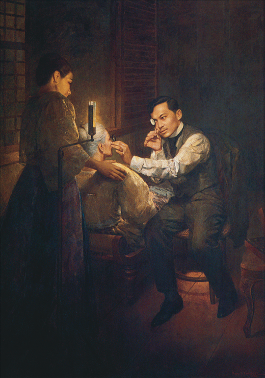
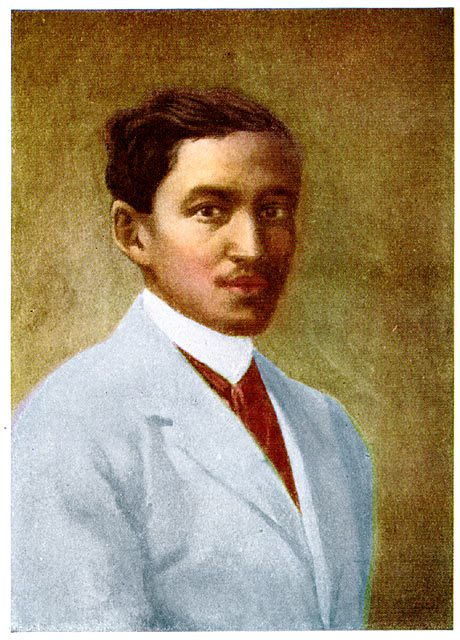

A Life of Purpose in Exile
Welcome to our interactive exhibit on Jose Rizal's time in Dapitan. Despite being exiled, he transformed this period into four years of immense productivity and community service.


Welcome to our interactive exhibit on Jose Rizal's time in Dapitan. Despite being exiled, he transformed this period into four years of immense productivity and community service.

